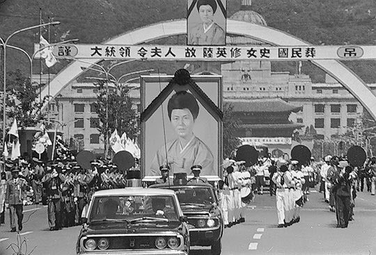
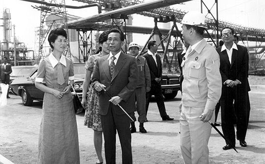
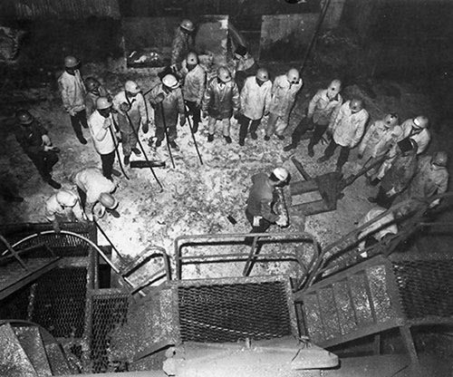
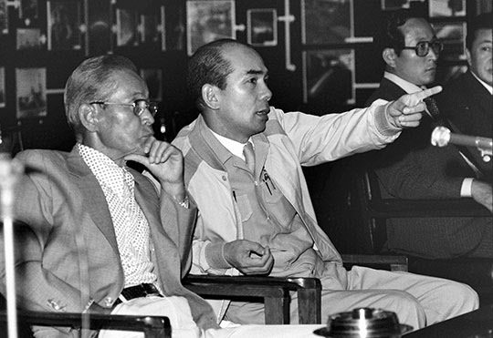

보도일 2015-03-04출처 조선일보 프리미엄조선 연재
포스코 사장 박태준이 어찌 짐작이나 할 수 있었으랴. 1974년 6월 29일 준공을 앞둔 포항제철소 주물선공장에서 육영수 여사와 따뜻하게 나누었던 작별인사가 다시는 만나지 못할 영원한 작별이 될 줄이야…. 그해 8월 15일, 영부인이 문세광의 흉탄에 쓰러진 것이다. 박태준은 눈물을 참을 수 없었다. 벌써 십여년 전, 1964년 새해 첫날, 박정희의 부름을 받아 청와대로 들어간 자신에게 따끈한 정종 한 잔을 따라주며 “요새도 많이 마셔요?” 하고는 미소를 지으며 살짝 흘겨보던 그 고운 눈매가 눈물샘을 건드리는 것만 같았다.

영부인을 보호하지 못한 자책감에 시달리는 경호실장 피스톨 박(박종규), 그가 쓸쓸히 청와대에서 퇴장했다. 육영수의 급서가 불러온 박종규의 퇴장과 차지철의 등장(8월 22일). 이것은 시나브로 박정희에게 다가드는 비극적 종말을 암시해주는 복선 같은 것이었다. 그러나 그때는 모두가 그것을 놓치고 말았다. 피스톨 박의 퇴장은 박태준에게도 청와대의 만만한 상대가 사라진 일이었다.
사랑하는 아내를 잃은 박정희는 그 뒤로 공식 기록상 네 차례 더 포항제철을 방문한다. 1976년 5월 31일 포철 2기 종합준공식, 1977년 9월 7일 건설 현장 순시, 1978년 12월 8일 포철 3기 종합준공식, 1979년 1월 31일 포철 4기 종합착공식(이날 포철에는 들르지 않음). 그 이전의 아홉 차례에 견줘보면 뜸해진 편이었다. 대통령이 판단하기에도 그만큼 포항제철이 안정 궤도 위에 올랐다는 뜻이었을 테지만, 비단 그뿐이었으랴. 날이 갈수록 정치 방면이 더 복잡해지고 더 위험해지고 더 난해해졌다는 뜻이기도 했다.
박태준의 포스코는 박정희가 제시한 비전(포항제철소에서 연산 조강 1000만 톤 달성)을 향해 순탄하게 나아가고 있었다. 1975년 봄날에 원료 공급선의 다양화를 위해 뉴질랜드, 인도, 브라질, 페루, 캐나다, 미국 등으로 바쁘게 돌아다닌 박태준은 1976년 새해 들어 포철 2기 종합 준공 카운트다운을 시작하고, 곧이어 외자 7억6360만 달러와 내자 4억8907만 달러가 소요될 포철 3기 종합착공을 준비했다.

포철 3기를 계획할 때 포스코는 3기 건설의 내자 소요 총액(2750억 원) 중 42%를 자체 경영이익금과 사내 보유자금으로 충당할 수 있을 것으로 계산해 본다. 그러나 재무부서가 주판알을 ‘짜게’ 굴린 결과였으며, 실제로는 90%를 충당하게 된다. 이것은 경영상태가 매우 견실하다는 결정적 증거였다. 전용 받은 대일청구권자금을 ‘그보다 훨씬 초과하여 너무 충분하게’ 우리 정부에 갚아주는 가운데 ‘제철보국’ 경영철학에 따라 국내 수요가들에게는 국제 시세보다 무려 20%~40% 싸게 공급해오고 있음에도 불구하고….
그러한 실적과 실력을 바탕으로 박태준은 포철 3기 설비들 중 고로는 그때 세계에서 용적량이 가장 큰 대형(3,759입방미터)으로 결정했다. 1고로와 2고로를 합친 것보다 더 큰 규모였다. 엔지니어들이 우리 손으로 돌릴 수 있겠느냐는 걱정을 했지만 그는 도전해야 한다고 밀어 붙였다. 뒷날에 포스코 사장을 역임하는 강창오 3고로 공장장은 다음과 같은 회고를 남긴다.
<고로의 말썽이나 고장을 엔지니어들은 ‘배탈’이라 부르는데, 300만 톤짜리를 세운다고 했을 때, 솔직히 겁을 먹었습니다. 우리 기술력에는 아직 너무 과하지 않나 했던 겁니다. 내가 3고로 공장장으로 갔습니다. 그런데 겁먹은 것을 용케도 알아차린 것처럼 말썽을 일으키더군요. 꼬박 2주일을 거의 뜬눈으로 사투를 벌인 끝에 간신히 배탈을 잡았어요.
회복에 1주일이 더 필요해서 3주간 3고로를 돌리지 못했는데, 영업 손실이 60억 원에서 70억 원 정도였지요. 그런데 박태준 사장께서 “배탈을 경험하고 극복한 기술자들이 제철회사의 자산”이라며 오히려 격려를 해주셨지요. 밤샘 작업에 매달려 있었을 때는 격려방문을 오셔서 ‘센트롬’이라는 미제 비타민을 주셨는데….>
1976년 8월 2일 땡볕 아래서 포철은 300만 톤 규모 3기 건설을 위한 종합착공의 축포를 터트렸다. 3기는 1기와 2기를 합친 것보다 1.2배, 2기의 2.5배 규모였다. 공사 절정기에는 하루 1만4000명이 투입돼야 하는, 말 그대로 단군 이래 최대 역사를 시작하며 박태준은 역설했다.
“한마디로 당사의 운명이 걸려 있을 뿐만 아니라 우리나라가 중진국으로 도약하는 제4차 경제개발 5개년계획의 성패가 달린 중대한 계기임을 깊이 명심하고 맨주먹으로 출발했던 창업정신을 다시 한 번 일깨워야 합니다.”

1976년이 저물었다. 박정희는 김재규를 중앙정보부장에 앉혔다. 하지만 한미관계나 국내정치 상황은 박정희의 험난한 전도를 예고하고 있었다. 심복을 바꾼다고 해서 달라질 일이 아닐 것 같았다.
포스코의 앞길에도 뜻밖의 복병이 없는 것은 아니었다. 1977년 4월 2일 새벽, 최악의 사고가 발생했다. 제1 제강공장에서 크레인 기사가 졸다가 그만 쇳물을 바닥에 엎질렀다. 용암처럼 펄펄 끓는 쇳물 44톤을 잘못 쏟아버린 사고. 요행히 인명 피해는 없었다. 가장 심각한 피해는 ‘공장의 신경계’라 할, 제강공장 지하에 매설된 케이블의 70%가 타버린 것이었다.
긴급 파견된 일본인 기술자들이 완전복구에는 3개월 내지 4개월 걸릴 것이라고 했다. 복구기간이 늘어나는 그만큼 조업 차질과 영업 손실이 커질 수밖에 없는 상황에서 박태준은 ‘완전복구 1개월’이라는 비상 목표를 내걸고 기어코 성취한다.
꼬박 한 달 동안 사투를 벌여 목표를 성취한 영일만 사내들이 엔간히 한숨을 돌리고 있던 6월, 이병철 삼성그룹 회장이 포항제철을 찾았다. 그는 사고 수습을 끝냈다는 후배(박태준)와 임직원을 격려해주고 공장도 제대로 살펴보려는 마음이었다. 그날이 박태준으로서는 선배(이병철)와 두 달 만의 재회였다.
지난 4월 초에 안양 골프장으로 박태준을 불러내서 장기영 전 부총리와 화해의 자리(1967년 9월말 박태준 종합제철사업추진위원장 내정자가 장기영 경제부총리에게 거칠게 대든 적이 있었다. 연재 32회 참조)를 마련해준 이가 이병철이었다. 그리고 며칠 지나지 않아 박태준은 싱가포르에서 한국일보 주재기자를 통해 느닷없이 장기영의 부음을 듣게 됐다.
이병철은 다른 방문객이 한 번도 묻지 않았던 질문을 던졌다.
“재무구조가 어떻게 되나?”
황경로가 여러 가지를 대답했다. 50% 수준의 부채비율, 차관과 내자의 조기 상환, 3기 건설 소요내자의 90% 포철 자체 조달…. 이병철이 자못 놀라운 표정을 감추지 못했다.
“그러면 포항제철은 박 사장의 것이네. 박 사장, 이런 경영의 모든 것을 다 어디서 배웠나?”
선배가 후배에게 묻는 것이 아니라 칭찬과 격려를 보내는 것이었다.

이병철은 고로를 보려고 했다. 박태준은 선배를 1고로 주상으로 안내했다. 이병철이 시선을 몇 바퀴 돌리고 나서 말했다.
“여기는 안방이네. 고로가 이러니 다른 데는 더 안 봐도 되겠다.”
고개를 끄덕인 선배는 후배가 창안한 연수제도, 연수원 운영, 연수투자에 대해 감명을 받았다. 연수가 기술식민지 극복의 첫째 단계고, 기술개발이 그 둘째 단계라는 후배의 지론에도 흔쾌히 동의했다.